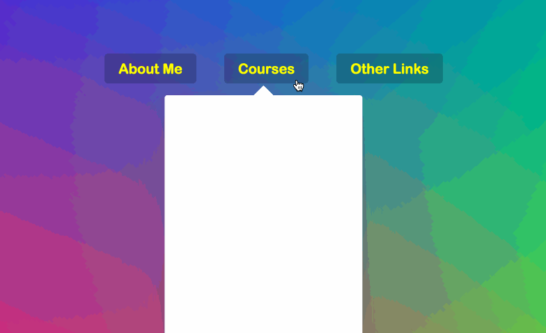
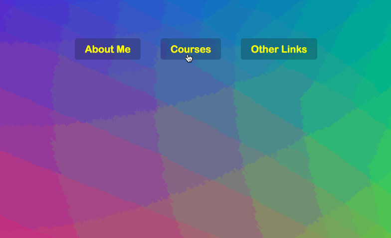

在Github上看到了wesbos的一个Javascript30天挑战的repo，旨在使用纯Js来进行练习，不允许使用任何其他的库和框架，该挑战共30天，我会在这里记录下自己练习的过程和遇到的问题。

第26天的练习是一个导航栏动画的实现，当鼠标悬浮在不同的导航按钮上背景的变化会伴随着动画的出现，详见👆动画。
线上DEMO
源码
const nav = document.querySelector('.top');
const menu = document.querySelectorAll('ul.cool > li');
const background = document.querySelector('.dropdownBackground');
function mouseEnter() {
this.classList.add('trigger-enter');
setTimeout(() => this.classList.contains('trigger-enter') && this.classList.add('trigger-enter-active'), 150);
background.classList.add('open');
const dropdown = this.querySelector('.dropdown');
const dropdownCoords = dropdown.getBoundingClientRect();
const navCoords = nav.getBoundingClientRect();
const coords = {
width: dropdownCoords.width,
height: dropdownCoords.height,
left: dropdownCoords.left - navCoords.left,
top: dropdownCoords.top - navCoords.top
};
background.style.setProperty('width', `${coords.width}px`);
background.style.setProperty('height', `${coords.height}px`);
background.style.setProperty('transform', `translate3D(${coords.left}px,${coords.top}px,0)`);
}
function mouseLeave() {
this.classList.remove('trigger-enter','trigger-enter-active');
background.classList.remove('open');
}
menu.forEach(ele => ele.addEventListener('mouseenter', mouseEnter));
menu.forEach(ele => ele.addEventListener('mouseleave', mouseLeave));
|
<!-- 部分CSS -->
.dropdown {
opacity: 0;
position: absolute;
overflow: hidden;
padding: 20px;
top: -20px;
border-radius: 2px;
transition: all 0.5s;
transform: translateY(100px);
will-change: opacity;
display: none;
}
.trigger-enter .dropdown {
display: block;
}
.trigger-enter-active .dropdown {
opacity: 1;
}
.dropdownBackground {
width: 100px;
height: 100px;
position: absolute;
background: #fff;
border-radius: 4px;
box-shadow: 0 50px 100px rgba(50, 50, 93, .1), 0 15px 35px rgba(50, 50, 93, .15), 0 5px 15px rgba(0, 0, 0, .1);
transition: all 0.3s, opacity 0.1s, transform 0.2s;
transform-origin: 50% 0;
display: flex;
justify-content: center;
opacity: 0;
}
.dropdownBackground.open {
opacity: 1;
}
|
总体思路：
- 首先要分别监听菜单栏中各个菜单选项的鼠标进入和鼠标移除事件，当鼠标进入菜单选项中时显示下拉菜单，并显示白色背景；鼠标移除时使下拉菜单和白色背景消失。
这里之所以要使用一个白色背景的div块而不是直接为下拉菜单设置白色背景，是因为我们想要一个左右滑动的过渡动画效果，若我们设置下拉菜单为白色背景，那么我们每一次鼠标移动了一个选项会有一个消失间隙，之后才会出现，大概像👇这样，并不是我们想要的效果。

- 过渡动画的实现原理大致如下：当鼠标移动到某一个选项后，首先使下拉菜单显示，但是在150ms内使其显示出来，这里用了
settimeout(fn,150)，来延迟添加下拉菜单的trigger-enter-active类名，这样就会有一个过渡的效果了。部分代码解析
- 鼠标进入时添加类名
this.classList.add('trigger-enter');
setTimeout(() => this.classList.contains('trigger-enter') && this.classList.add('trigger-enter-active'), 150);
background.classList.add('open');
|
这里有一点需要注意，因为我们设置了150ms延迟之后添加trigger-enter-active类，那么有可能会发生这样的情况：当我们以飞快的速度在各个选项之间切换的时候，有可能还没有到150ms鼠标就已经移出了选项了，这时在150ms之后，就会多添加了trigger-enter-active类在每一个选项里面，造成意想不到的错误。
因此我们加了一句判断，150ms后只有当该鼠标还悬停在这个选项之中的时候，我们才添加trigger-enter-active类。
- 动态的设置白色背景块的位置信息
const coords = {
width: dropdownCoords.width,
height: dropdownCoords.height,
left: dropdownCoords.left - navCoords.left,
top: dropdownCoords.top - navCoords.top
};
background.style.setProperty('width', `${coords.width}px`);
background.style.setProperty('height', `${coords.height}px`);
background.style.setProperty('transform', `translate3D(${coords.left}px,${coords.top}px,0)`);
// background.style.setProperty('top', `${coords.top}px`);
// background.style.setProperty('left', `${coords.left}px`);
|
这里有一点需要注意的是，我们在为白色背景块设置左边距和上边距的时候，要分别减去导航栏的上边距和左边距。因为我们的导航栏上面可能会有其他的内容，若不将这段距离减去，就会造成白色背景块位置偏移。
translate3D(x,y,z)这里之所以使用translate3D，是因为translate3D属性会触发硬件加速，开启了硬件加速的transform是不会触发界面repaint的，拥有更好的性能。
END! 💯